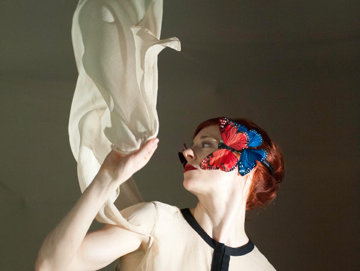

Hans was Heiri
Oct 23—Oct 26, 2013
7:30pm
Location: BAM Harvey Theater
Run Time: 1hr 20min
Season Ticket Price: $17.50-60
Full Price Ticket: $25-75
Zimmermann & de Perrot
“…part-acrobatics, part-dance and part-slapstick show with a freewheeling feel…”
—London Evening Standard
In this trailblazing work directed by the inventive Swiss duo Zimmermann & de Perrot, seven performers inhabit a topsy-turvy world where, at any moment, the ceiling can become a floor, a floor can become a wall, and a door can become a chasm. A gigantic, rotating four-room box is the dizzying place where these loose-limbed actors, dancers, and acrobats dodge falling furniture and tumble their way to acrobatic virtuosity, always with impeccable timing. Conceived by choreographer Martin Zimmermann and composer Dimitri de Perrot, who performs his ecstatic original score, Hans was Heiri offers a hilarious portrait of human relationships conveyed through a witty scenic language all its own.
Concept, direction and stage design by Zimmermann & de Perrot
Composition by Dimitri de Perrot
Choreography by Martin Zimmermann
Dramaturgy by Sabine Geistlich
Decor by Ingo Groher, Christiane Voth, and Théâtre Vidy-Lausanne
Costumes by Franziska Born
Lighting design by Ursula Degen
Sound design by Andy Neresheimer
Part of 2013 Next Wave Festival and Next Wave Theater
Nosferatu
Oct 30—Nov 2, 2013
7:30pm
BAM Harvey Theater
1hr 50min
Season Ticket Price: $14-50
Full Price Ticket: $20-65
Inspired by Bram Stoker’s Dracula
TR Warszawa and Teatr Narodowy
Written and directed by Grzegorz Jarzyna
“A vampiric symphony of terror… to the beat of music composed by John Zorn, guru of the New York avant-garde.”
—Rzeczpospolita (Poland)
Terrifying, yet seductive. Blood-thirsty harbingers of death who extend a twisted promise of immortality. The vampire figure has long been defined by Bram Stoker’s classic interpretation, Dracula. In Nosferatu, Poland’s TR Warszawa and Teatr Narodowy dig beneath that veneer to deliver a deeply hypnotic, visually sumptuous new take on the vampire legend. Set to an unnerving score by downtown fixture John Zorn, director Grzegorz Jarzyna’s production suspends us in a liquid-green world of shadowy set pieces, brimming with eroticism, while returning to the legend’s deep reflections on fear and the human need for transgression.
Set design and costumes by Magdalena Maciejewska
Lighting design by Jacqueline Sobiszewski
Video design by Bartek Macias
Music by John Zorn
In coproduction with National Audiovisual Institute, The Barbican, Dublin Theatre Festival, Adelaide Festival and TR Warszawa Foundation.
Part of 2013 Next Wave Festival and Next Wave Theater
An Enemy of the People
Nov 6—Nov 10, 2013
7:30pm
Sat. 12:30pm 7:30pm
Sun. 3:00pm
BAM Harvey Theater
2hrs
Season Ticket Price: Starts at $17.50
Full Price Ticket: Starts at $25
By Henrik Ibsen
In a version by Florian Borchmeyer
Schaubühne am Lehniner Platz
Directed by Thomas Ostermeier
BAM Harvey Theater
2hrs
Season Ticket Price: Starts at $17.50
Full Price Ticket: Starts at $25
By Henrik Ibsen
In a version by Florian Borchmeyer
Schaubühne am Lehniner Platz
Directed by Thomas Ostermeier
A battle rages in the city. The drinking water is contaminated but—never mind the opinion of a local expert—there’s a tourism industry to protect. Factions form: to tell or not to tell? Studded with contemporary references (renditions of songs by David Bowie and Gnarls Barkley, an excerpt of the incendiary 2008 political manifesto The Coming Insurrection), Ostermeier’s production brings Ibsen’s dark satire to a boil—and, with help from the people, a solitary whistleblower to his knees.
Adaptation by Florian Borchmeyer
Set design by Jan Pappelbaum
Costumes by Nina Wetzel
Music by Malte Beckenbach, Daniel Freitag
Lighting design by Erich Schneider
Paintings by Katharina Ziemke
Part of 2013 Next Wave Festival and Next Wave Theater
The Humans
Nov 13—Nov 17, 2013
7:30pm
Sun. 3:00pm
BAM Fisher Fishman Space
3hrs with intermission
All Tickets: $20
BAM and PERFORMA present
The Humans
Witte de With Center for Contemporary Art
Written and directed by Alexandre Singh
BAM Fisher Fishman Space
3hrs with intermission
All Tickets: $20
BAM and PERFORMA present
The Humans
Witte de With Center for Contemporary Art
Written and directed by Alexandre Singh
Theater, music, sculpture, Nesquik bunnies, Greco-Roman masks, and a gigantic mountain find common cause in this irreverent performance work by the award-winning British visual artist Alexandre Singh. A boldly original concept that started as an installation piece at the Witte de With Center for Contemporary Art in Rotterdam and evolved into a full-fledged theatrical account of the universe’s creation, The Humans comes to BAM in its culminating chapter: a deliciously indecent mixed-media account of Man’s fall from grace.
Modeled on the comic writings of Aristophanes and set at the dawn of time and space, The Humans tells the tale of two spirits named Tophole and Pantalingua, who would rather the Earth not be created at all. In a battle against the egomaniacal Creator, they conspire their way to an accidental Paradise Lost, ultimately corrupting the eponymous humans—portrayed as a songful and statuesque Greek chorus—into the flawed mortals we are today.
Choreography by Flora Sans
Music by Gerry Arling and Rik Elstgeest
Costume design by Holly Waddington
Lighting design by Guus van Geffen
The Humans is commissioned by Witte de With Center for Contemporary Art and Performa. The Humans is co-produced by Preromainbritain LLC; Witte de With; Productiehuis Rotterdam; Rotterdamse Schouwburg and Performa 13. It is presented in partnership with festival De Keuze and the Brooklyn Academy of Music (BAM) as part of Performa 13.
Part of 2013 Next Wave Festival and Next Wave Theater
Water
Nov 13—Nov 17, 2013
7:30pm
Sun. 3:00pm
BAM Harvey Theater
1hr 40min
Season Ticket Price: $14-48
Full Price Ticket: $20-60
Filter Theatre & Lyric Hammersmith
Created by Filter Theatre and David Farr
“…a distinctive and distinguished piece of theatre.”
—The Independent (UK)
BAM Harvey Theater
1hr 40min
Season Ticket Price: $14-48
Full Price Ticket: $20-60
Filter Theatre & Lyric Hammersmith
Created by Filter Theatre and David Farr
“…a distinctive and distinguished piece of theatre.”
—The Independent (UK)
In a beautiful theatrical reverie, director David Farr joins forces with Filter Theatre to present an exquisitely crafted story that reveals how the cracks in our most intimate human relationships resonate on a global scale.
Set beneath a vertical lake of light, ebbing from lavender to cerulean blue, Water intertwines two deeply personal dramas, both cast in the shadow of the struggle against climate change. Buoyed by live music and real-time video, this deft, dreamlike rendering of the personal and political asks how we can reach beyond ourselves and bond, like water, with those around us.
Directed by David Farr
Set design by Jon Bausor
Lighting design by Jon Clark
Music and sound design by Tim Phillips
Part of 2013 Next Wave Festival and Next Wave Theater
La Belle et la Bete
Nov 21—Nov 23, 2013
7:30pm
Peter Jay Sharp Building: Bam Howard Gilman Opera House
1hr 30min
Season Ticket Price: $14-48
Full Price Ticket: $20-60
Lemieux Pilon 4D Art
Created and directed by Michel Lemieux and Victor Pilon
Created and written by Pierre Yves Lemieux
“…a stunner, pouring forth one unforgettable three-dimensional image after another.”
—The Boston Globe
A disfigured recluse hides his pain in a lonely mansion, until a beautiful artist appears, nursing her own heartache. In this ravishing retelling of Beauty and the Beast, acclaimed creators Michel Lemieux and Victor Pilon transform a classic fairy tale into a grand feat of technological daring, charting breathtaking new territory in live performance.
Actors interact seamlessly with sophisticated projected imagery as a mercurial dream world unfolds. A ghostlike horse charges through a tangled forest of thorns, a mirror breaks in an explosion of virtual glass, and a phantom moves in for his disembodied kiss, hypnotizing us with this story about the redemptive power of love.
Translated by Maureen Labonté
Original score by Michel Smith
Set, costume, and prop design by Anne-Séguin Poirier
Visual design by Michel Lemieux and Victor Pilon with Mathieu St-Arnaud
Lighting design by Alain Lortie
Produced in collaboration with the Théâtre du Nouveau Monde (Montreal, Canada). Co-commissioned by LUMINATO, Toronto
Festival of Arts creativity and Espace Jean Legendre, Scène nationale de l’Oise en préfiguration
Part of 2013 Next Wave Festival and Next Wave Theater
Bodycast

Dec 3—Dec 7, 2013
7:30pm
Bam Fisher Fishman Space
Approx 1hr
All Tickets: $20
Bodycast: An Artist Lecture by Suzanne Bocanegra starring Frances McDormand
Directed by Paul Lazar
Bam Fisher Fishman Space
Approx 1hr
All Tickets: $20
Bodycast: An Artist Lecture by Suzanne Bocanegra starring Frances McDormand
Directed by Paul Lazar
Inspired by the two teenage years visual artist Suzanne Bocanegra spent in a body cast due to scoliosis, Bodycast is an inventive theatricalization of the ubiquitous “artist talk.” Part performance and part essay, Bocanegra uses the format to explore how and why she became an artist. It is a sequel of sorts to Bocanegra’s work When a Priest Marries a Witch, which used a similar approach to explore her Texas upbringing and had its premiere in 2010 at the Museum of Modern Art in New York. Upon viewing that earlier work, Academy Award-winning actor Frances McDormand suggested an artistic collaboration to Bocanegra. Exploring topics as disparate as Roman art, Rose queens, and Texas drill teams, Bodycast mines specific details of Bocanegra’s life to create a more general meditation on art-making and shifting ideals of feminine beauty. Singer Theo Bleckmann and dancer Emily Coates will make guest appearances in the work.
Text and visuals by Suzanne Bocanegra
Sound design by Jamie McElhinney
Lighting design by Laura Mroczkowski
Part of 2013 Next Wave Festival and Next Wave Theater
The Rime of the Ancient Mariner
Dec 10—Dec 22, 2013
7:30pm
Fri. Sat. 7:00pm 9:00pm
Sun. 3:00pm
BAM Harvey Theater
Approx 45min
Season Ticket Price: $17.50-80
Full Price Ticket: $25-100
By Samuel Taylor Coleridge
Directed by Phyllida Lloyd
“…a riveting, virtuoso performance…”
—Financial Times on Fiona Shaw
“Water, water everywhere.” Fiona Shaw delivers a masterful performance of Samuel Taylor Coleridge’s eerie tale of penance paid on the high seas. Like an actor possessed, the fiery Shaw inhabits the very marrow of this epic 18th-century poem, bounding across the stage while transforming Coleridge’s luminous language into an exhilarating lived experience. In the icy Antarctic, a ship is lost at sea. And when a mariner shoots a bird thought to be the crew’s salvation, his macabre, guilt-inducing fate—the veritable “albatross around the neck”—is decided. Accompanied by dancer Daniel Hay Gordon, who offers interpretive counterpoint throughout, Shaw skirts a whirlpool, braves a crew of corpses, and rolls Death’s dice with poetic abandon, taking us to hell and back.
Composed by Mel Mercier
Lighting design by Jean Kalman
Set design by Chloe Obolensky
Choreography by Kim Brandstrup
Part of 2013 Next Wave Festival and Next Wave Theater
A Piece of Work
Dec 10—Dec 22, 2013
7:30pm
Sat. 7:30pm 10:00pm
BAM Fisher Fishman Space
Approx 1hr 10min
All Tickets: $20
A machine-made Hamlet by Annie Dorsen
To sleep. To dream. In Shakespeare’s Hamlet, we confront the most fundamental questions of our humanity. But what exactly do we confront when the play is shuffled, reordered, and rewritten by a computer?
In this daring marriage of live acting and artificial intelligence, Obie Award-winning director Annie Dorsen delivers a provocative parsing of Shakespeare’s work. Based on a sophisticated algorithm that generates a new version of the play nightly—words, visuals, lighting, music, and all—A Piece of Work features one actor, alternating between Obie winner Scott Shepherd (Elevator Repair Service’s Gatz, The Wooster Group’s Hamlet) and theater legend Joan MacIntosh, a looming computer screen, and a chorus of synthesized voices channeling this uncanny text, refashioned in the automated image of our digital times.
Concept and direction by Annie Dorsen
Sound and network design by Grégory Beller
Scenography/Video by Jim Findlay
Lighting design by Bruno Pocheron & Ruth Waldeyer
Systems design and text programming by Mark Hansen
A Piece of Work is a co-production of BIT Teatergarasjen (Bergen), Black Box Teater (Oslo), Brooklyn Academy of Music (NYC), brut (Vienna), On the Boards (Seattle), and Théâtre de la Villette (Paris).
A Piece of Work was developed in part at Live Arts Bard, Bard College's residency and commissioning program for the performing arts, through a Lower Manhattan Council on the Arts Space Grant (2011) and while in residence at 3LD Art & Technology Center. Production support provided by On the Boards through its Performance Production Program.
A Piece of Work is a House On Fire project, receiving support from the Culture Programme of the European Union. Additional development support provided by the city of Vienna, Abrons Art Center, and many generous individuals.
Performance by Scott Shepherd: Dec 18 & 20 at 7:30pm & Dec 21 at 10pm
Performance by Joan MacIntosh: Dec 19 & 21 at 7:30pm
Part of 2013 Next Wave Festival and Next Wave Theater
En Atendant
Oct 19—Oct 20, 2013
Peter Jay Sharp Building: BAM Howard Gilman Opera House
1hr 35min
Season Ticket Price: $21-52
Full Price Ticket: $30-65
Anne Teresa De Keersmaeker
Rosas
“…nothing less than glorious.”
—Sydney Morning Herald (Australia)
The enormously influential choreographer Anne Teresa De Keersmaeker has a distinctive ear for music—finding mesmerizing drama in patterns of sound to add stunning dimensionality to movement. This fall, she returns to BAM with her Belgium-based company, Rosas, to present two companion works grounded in the exquisite polyphonic medieval vocal style known as ars subtilior: En Atendant, a breathtaking showcase of movement counterpoint; and Cesena, which features the ravishing vocal group graindelavoix.
In En Atendant, De Keersmaeker’s style of deliberate, fluid movement takes us into the soft glow of twilight. Eight bodies cluster, disperse, and connect again in a corporeal counterpoint, echoing the dissonant music of an onstage trio (viol, recorder, and voice).
Concept by Anne Teresa De Keersmaeker
Created with and performed by Rosas
Set design by Michel François
Costume design by Anne-Catherine Kunz
Part of 2013 Next Wave Festival and Next Wave Dance
Cesena
Oct 19—Oct 20, 2013
Peter Jay Sharp Building: BAM Howard Gilman Opera House
1hr 50min
Season Ticket Price: $21-52
Full Price Ticket: $30-65
Choreography by Anne Teresa De Keersmaeker
Musical direction by Björn Schmelzer
Rosas and graindelavoix
The enormously influential choreographer Anne Teresa De Keersmaeker has a distinctive ear for music—finding mesmerizing drama in patterns of sound to add stunning dimensionality to movement. This fall, she returns to BAM with her Belgium-based company, Rosas, to present two companion works grounded in the exquisite polyphonic medieval vocal style known as ars subtilior: En Atendant, a breathtaking showcase of movement counterpoint; and Cesena, which features the ravishing vocal group graindelavoix.
In Cesena, a new day begins: dancers inscribe their sweeping movements on a stage circled with sand, while singers (from the ravishing vocal ensemble graindelavoix, led by Björn Schmelzer) intone vibrant tapestries of sound, invoking the ancient and the modern alike.
Concept by Anne Teresa De Keersmaeker & Björn Schmelzer
Created with and performed by Rosas and graindelavoix
Set design by Ann Veronica Janssens
Costume design by Anne-Catherine Kunz
Part of 2013 Next Wave Festival and Next Wave Dance
Run Don't Run
Oct 22—Oct 26, 2013
7:30pm
BAM Fisher Fishman Space
Approx 1hr
All Tickets: $20
Brian Brooks Moving Company
Choreography by Brian Brooks
“Brooks loves to shatter conventional notions of the human capacity for strength and endurance.”
—Dance Magazine
Brian Brooks is a daring choreographer, concocting precise, kinetic, and volatile sequences of movement that test the threshold of physical endurance. In Run Don’t Run, Brooks (recently awarded a 2013 Guggenheim Fellowship) employs rapid-fire partnering to explore the spatial contradictions of bodies in motion. Behind a blur of color—created by hundreds of cloth strands stretched across the stage—dancers ricochet off one another in a strobe-like flurry of actions: captured, suspended, and broken apart. Microphones installed throughout the space pick up every sound, amplifying the laws of gravity and inertia, as the dancers transgress space and time.
Music by Christopher Lancaster
Lighting design by Joe Levasseur
Installation design by Brian Brooks and Philip Treviño
Costume design by Karen Young
Part of 2013 Next Wave Festival and Next Wave Dance
Dark Theater
Oct 29—Nov 2, 2013
7:30pm
BAM Fisher Fishman Space
Approx 1hr
All Tickets: $20
Dance Heginbotham
Choreography by John Heginbotham
“…a strong choreographic personality—a refreshing mixture of casualness and discipline, lunacy and sincerity…”
-The New Yorker
As a dancer with Mark Morris Dance Group, John Heginbotham won over audiences with his magnetism and incisive musicality. With Dance Heginbotham, he combines clever movement with a range of music, from Daft Punk to Irving Berlin, into an utterly compelling form of dance-theater.
For their BAM debut, Heginbotham and company present Dark Theater, a brand new work inspired by Dadaist painter Francis Picabia’s provocative 1924 ballet Relâche, set to a mellifluous score by Erik Satie. Six dancers inhabit a blissfully nonsensical world in which the floor and ceiling are occasionally reversed, the non sequitur is king, and movement perpetually affirms the now.
Lighting design by Nicole Pearce
Costume design by Maile Okamura
Part of 2013 Next Wave Festival and Next Wave Dance
Dark Lark
Nov 6—Nov 9, 2013
7:30pm
BAM Fisher Fishman Space
Approx 1hr
All Tickets: $20
Kate Weare Company
Choreography by Kate Weare
“No one else is making work quite like hers.”
—The Village Voice
In this provocative new work, Kate Weare—the BAM Fisher’s first artist-in-residence—looks to sexual fantasy as a metaphor for creative expression, using the stage as a place where we can perform as the most potent, desiring versions of ourselves.
An original cello score by Chris Lancaster ushers us into this suggestive realm, fetishized and electrified by Weare’s sensual, aggressively intertwined movement vocabulary. Brilliantly attuned to each individual dancer’s quirks and complex identities, Weare orchestrates a series of duets, solos, and trios that explore exposure, self-censorship, and vulnerability, examining how—in the safest, most indeterminate spaces—bodies offer up secrets of their inner life.
Costume design by Sarah Cubbage
Lighting design by Brian Jones
Set design by Kurt Perschke
Part of 2013 Next Wave Festival and Next Wave Dance
And then, one thousand years of peace
Nov 7—Nov 9, 2013
7:30pm
Peter Jay Sharp Building: BAM Howard Gilman Opera House
1hr 40min
Season Ticket Price: $14-44
Full Price Ticket: $20-55
Ballet Preljocaj
Choreography by Angelin Preljocaj
“Preljocaj is a clever choreographer, superb at eliciting a raw, uninhibited physicality…”
-The Guardian (UK)
In this mammoth dance-theater work, choreographer Angelin Preljocaj explores the apocalypse as a revelatory event that lays bare the hidden truths of our being.
Backed by influential DJ Laurent Garnier’s throbbing electronic music, mixed with samples of Beethoven’s Moonlight Sonata, Ballet Preljocaj hurtles through history, impelled by the mysterious fires of passion and belief. On a set designed by renowned Indian artist Subodh Gupta, the dancers (wearing costumes by Russian fashion designer Igor Chapurin) alternate intense, slashing gestures with graceful classical ballet, evoking historical visions of life and death, angels and demons, and Edenic calm and chaos that have, for centuries, kept us clamoring for redemption. Tossed about by these rituals, the dancers float adrift, fearing the end but always struggling for peace.
Music by Laurent Garnier
Set design by Subodh Gupta
Costume design by Igor Chapurin
Lighting design by Cécile Giovansili-Vissière
Coproduction
Rhône General Council / Dance Biennial in Lyon, Théâtre National de Chaillot (Paris), Grand Théâtre de Luxembourg, The Amsterdam Music Theatre (Amsterdam, Netherlands), Theater im Pfalzbau (Ludwigshafen, Germany) Spielzeit'Europa - Berliner Festspiele (Germany), Theatre of Saint-Quentin-en-Yvelines, MC2 (Grenoble), Théâtre de Caen, Royal Opera House - the Château de Versailles, France-Russia Year 2010.
With the support of the Grand Théâtre de Provence, Aix-en-Provence.
Part of 2013 Next Wave Festival and Next Wave Dance
Sun
Nov 14—Nov 16, 2013
7:30pm
Peter Jay Sharp Building: BAM Howard Gilman Opera House
Approx 1hr 10min
Season Ticket Price: $14-44
Full Price Ticket: $20-55
Hofesh Shechter Company
Choreography and music by Hofesh Shechter
"Shechter is a magnificent, one-of-a-kind choreographer."
-The Guardian (UK)
Israeli-born, UK-based choreographer Hofesh Shechter’s highly visceral, theatrical dance pieces pair explosive, almost primal movement with the exhilarating sounds and smoky atmosphere of a rock concert. A former dancer with Ohad Naharin’s Batsheva Dance Company, Shechter and his company have performed sold-out shows at Sadler’s Wells in London and to packed houses in Paris, Sydney, and Tokyo.
This season, he returns to BAM with Sun, a brand-new work featuring an expanded company of 14 dancers and an eclectic soundtrack that includes original music by Shechter himself.
Costume design by Christina Cunningham
Lighting design by Lee Curran
Set design by Merle Hensel
Part of 2013 Next Wave Festival and Next Wave Dance
Play/Pause
Nov 20—Nov 23, 2013
7:30pm
Sat. 5:00pm 7:30pm
BAM Fisher Fishman Space
1hr 15min
All Tickets: $20
Susan Marshall & Company
Music by David Lang
In an electric guitar-fueled evening of postmodern dance-theater, Susan Marshall couples her intimate, structured choreography with the seductiveness of pop culture to explore our complex relationship to the media we consume.
Referencing the dance moves and sleek production values of popular music videos, Marshall’s choreography adds nuance to that high-gloss aesthetic while stripping away its context, rendering it both more profound and strange. A commissioned score by Pulitzer Prize-winning composer David Lang—performed live by members of guitar quartet Dither and Mantra Percussion—animates this dialogue between the real and the virtual, in which bodies hover somewhere in between.
Costume design by Diana Broussard
Lighting design by Eric Southern
Video design and cinematography by William Cusick
Set design by Andrea Mincic
Part of 2013 Next Wave Festival and Next Wave Dance
Moses(es)
Dec 4—Dec 7, 2013
7:30pm
BAM Harvey Theater
1hr 15min
Season Ticket Price: $14-36
Full Price Ticket: $20-45
Reggie Wilson/Fist & Heel Performance Group
Choreography by Reggie Wilson
“…one of this country’s most talented choreographers…”
—The New York Times
A master choreographer and interpreter of movement traditions from the African diaspora, Reggie Wilson refracts elements of blues, slave, and spiritual cultures through postmodern structures to create his “post-African/neo-HooDoo” style.
In Moses(es), he examines the many representations of Moses in religious texts—and in the mythical, canonical, and ethnographic imaginations—to ask: how do we lead and why do we follow? Inspired by Zora Neale Hurston’s vernacular retelling in Moses, Man of the Mountain, Wilson traveled to Israel, Egypt, Turkey, and Mali to consider the migration of African people throughout the world. The result is this rich evening-length work—choreographed for nine performers and set to live vocalizations from the African diaspora and beyond—that unflinchingly questions leadership and our complex relationship to the Moses story.
Dramaturgy by Susan Manning
Costume design by Naoko Nagata
Lighting design by Jonathan Belcher
Part of 2013 Next Wave Festival and Next Wave Dance
Bleed
Dec 11—Dec 14, 2013
7:30pm
Fri. 7:30pm 10:00pm
BAM Fisher Fishman Space
Approx 1hr 5min
All Tickets: $20
Tere O'Connor Dance
Choreography by Tere O'Connor
Marking the culmination of a two-year endeavor, choreographer Tere O’Connor collapses three of his dance works—Secret Mary, based on themes of authorship and agency; poem, a study in formalism, artifice, and complexity; and Untitled, a duet about the minutiae of personality—into a single hybrid creation. With each piece lending its own unique dancers, ideas, and approaches, Bleed forms a serendipitous new choreographic language. Meanings multiply through the layering, blending, and erasure of elements from each work, and in the choreographic threshold between process and product, craft and coincidence, a poetic logic is revealed.
Music composed by James Baker
Lighting design by Michael O’Connor
Set design by APTUM Architecture (Roger Hubeli and Julie Larsen)
Part of 2013 Next Wave Festival and Next Wave Dance
Electronium: The Future Was Then
Oct 25—Oct 26, 2013
8:00pm
Peter Jay Sharp Building: BAM Howard Gilman Opera House
Approx 2hr with intermission
Season Ticket Price: $17.50-44
Full Price Ticket: $25-55
Produced by BAM
In association with Questlove and Richard Nichols
Following the critical acclaim of last year’s Shuffle Culture, Ahmir “Questlove” Thompson (The Roots) returns to BAM with an all-star mash-up that celebrates the pioneering works of electronic music. R&B singer-producer Tom Krell (How to Dress Well), avant-R&B outfit Sonnymoon, beatboxer Rahzel, guitarist Kirk Douglas (The Roots), DJ-composer Jeremy Ellis, and conductor Andrew Cyr & Metropolis Ensemble join Grammy Award winner Questlove to sample and deconstruct seminal recordings by everyone from Robert Moog and Raymond Scott to Stevie Wonder and George Clinton into a feverishly modern new playlist. Old-school blips and beeps, sine waves, and analog synth solos mix with live vocals and contemporary electronics in this ecstatic riff on the analog revolution that paved the way for our music today.
Featured Artists:
Kirk Douglas
Jeremy Ellis—Live Drum Machine
How To Dress Well
Rahzel
Sonnymoon
Metropolis Ensemble conducted by Andrew Cyr
Designers:
Arrangements by Anthony Tid and Patrick McMinn
Lighting design by Alban Sardzinski
Sound engineering by John Smeltz
Stage design by Alex Delaunay
Stage manager Cheng-Yu Wei
Part of 2013 Next Wave Festival and Next Wave Music
21c Liederabend, op. 3
Nov 22—Nov 23, 2013
7:30pm
BAM Harvey Theater
Approx 2hr
Season Ticket Price: $14-36
Full Price Ticket: $20-45
21c Liederabend, op. 3 / Festival of Contemporary Art Song
Creative direction by Beth Morrison and Paola Prestini
Music direction by Julian Wachner
Featuring NOVUS NY, New York's finest solo singers, and The Choir of Trinity Wall Street
In this ambitious, expansive reimagining of the art-song recital, the 21c Liederabend festival comes to BAM, featuring music by many leading lights from the international and New York contemporary new-music scenes.
Boasting 10 world premieres, this unique weekend event—which played to sold-out audiences in its last two incarnations—pairs video artists and lighting designers with new-music ensemble NOVUS NY, the Choir of Trinity Wall Street, and top soloists. The eclectic, impeccably curated lineup is different each night and includes a commissioned song cycle by British-born composer Anna Clyne and music by Nico Muhly, Missy Mazzoli, Eric Whitacre, Marie Incontrera, David T. Little, Olga Neuwirth, Judd Greenstein, Paola Prestini, Ted Hearne, Mohammed Fairouz, and many others.
Scenic and lighting design by Maruti Evans
Projection design by S. Katy Tucker
Co-commissioned and co-produced by Beth Morrison Projects and VisionIntoArt
Friday Night
Composers: Paola Prestini, Tom Cipullo, David Handler, Huang Ruo, Eric Whitacre, Aleksandra Vrebalov, Missy Mazzoli, Tod Machover, Du Yun, Marie Incontrera, Mohammed Fairouz, Ted Hearne, and David T. Little
Featured performers: Christopher Burchett, David Adam Moore, Daisy Press, Min Xiao-fen, Trinity Choir, Anne-Carolyn Bird, Sarah Heaton, Lauren Worsham, Jessica Rivera, Tyrone Chambers, Timur Bekbosunov, Peter Tantsits, Marnie Breckenridge, and Netsayi & Black Pressure
Saturday Night
Composers: Paola Prestini, Thomas Cabaniss, Christopher Cerrone, Eric Whitacre, Judd Greenstein (with new animation by Joshua Frankel), Anna Clyne (Festival Commission), Nico Muhly, Julian Wachner, Olga Neuwirth, and Michel Van der Aa
Featured performers: Jessica Rivera, Amelia Watkins, Daisy Press, Trinity Choir, DM Stith, Trio Medieval, Timur Bekbosunov, Christopher Burchett, Rachel Calloway, Marnie Breckenridge, and Netsayi & Black Pressure
Part of 2013 Next Wave Festival and Next Wave Music
War Sum Up
Nov 1—Nov 2, 2013
7:30pm
Peter Jay Sharp Building: BAM Howard Gilman Opera House
1hr 20min
Season Ticket Price: $14-48
Full Price Ticket: $20-60
Music. Manga. Machine.
Hotel Pro Forma
Vocals by Latvian Radio Choir
Directed by Kirsten Dehlholm
"Painfully beautiful"
-Politiken (Denmark)
In this beautiful, audacious merging of Japanese manga imagery, texts from traditional Noh theater, electronic sounds, and new music sung by the Latvian Radio Choir, War Sum Up ponders the essence of war.
Twelve bodies, shadow-dappled and anonymous, stand on a looming stage. They inhabit a scarred two-dimensional world, trapped behind projections of images of combat: an explosion, a suit of armor, a hand turning into a gun. Amid this stylized tableau are lush, dissonant chorales by Latvian composer Santa Ratniece, alternating with crackling soundscapes by British electronic pop group the Irrepressibles, intoning hymns to the warrior, spy, and soldier.
Music by The Irrepressibles, Santa Ratniece with Gilbert Nouno
Concept by Willie Flindt and Kirsten Dehlholm
Musical direction by Kaspars Putnins
Costumes by Henrik Vibskov
Lighting design by Jesper Kongshaug
Libretto from classic Noh theater edited by Willie Flindt
Manga drawings by Hikaru Hayashi
Part of 2013 Next Wave Festival and Next Wave Music
On Contemporary Circus
Thu, Oct 24, 2013
6:00pm
BAM Fisher: Hillman Studio
1hr
All Tickets: $15; $7.50 for Friends of Bam
With Duncan Wall
Duncan Wall, author of The Ordinary Acrobat: A Journey into the Wondrous World of the Circus, Past and Present and professor of circus history at the École Nationale de Cirque in Montreal, offers a brief survey of circus and discusses the beauty and diversity of the art form today.
Part of 2013 Next Wave Festival
On Vampires
Fri, Nov 1, 2013
6:00pm
Peter Jay Sharp Building: Hillman Attic Studio
1hr
All Tickets: $15; $7.50 for Friends of Bam
With Joan Acocella
New Yorker staff writer Joan Acocella sheds light on one of the most prevalent folklore figures in the collective consciousness: the vampire. In examining its long, storied history—from Bram Stoker’s Dracula to the current obsession with vampires in popular culture—Acocella gives context to Grzegorz Jarzyna’s adaptation in Nosferatu.
Part of 2013 Next Wave Festival
On Truth (and Lies) in Democracy

Thu, Nov 7, 2013
6:00pm
BAM Fisher: Hillman Studio
1hr
All Tickets: $15; $7.50 for Friends of Bam
Co-presented by BAM and the Onassis Cultural Center NY
Hosted by Simon Critchley
With Thomas Ostermeier
In conjunction with An Enemy of the People
Director Thomas Ostermeier and philosopher Simon Critchley debate one of the most lasting Hellenic ideals: democracy. They explore Athenian democracy in the context of Ostermeier’s production of Ibsen’s An Enemy of the People and tackle the question: does our contemporary notion of democracy still signify government by the people, for the people?
Part of 2013 Next Wave Festival
On Truth (and Lies) in Greek Comedy
Sun, Nov 17, 2013
12:30pm
BAM Fisher: Hillman Studio
1hr 30min
All Tickets: $15; $7.50 for Friends of Bam
Co-presented by BAM and the Onassis Cultural Center NY
Hosted by Simon Critchley
With Alexandre Singh, Sam Crane, and Liesbeth Levy
In conjunction with The Humans
Artist Alexandre Singh and philosopher Simon Critchley discuss Greek comedy and Aristophanes—whose work was the inspiration for Singh’s staging of The Humans—and contemplate the legacy of classical Greek theater today. Actor Sam Crane and theorist/philosopher Liesbeth Levy will also be joining Alexandre Singh and Simon Critchley.
Part of 2013 Next Wave Festival
On Climate Change
Sat, Nov 16, 2013
5:00pm
Peter Jay Sharp Studio: Hillman Attic Studio
1hr 30min
All Tickets: $15; $7.50 for Friends of Bam
With David Farr and Daniel P. Schrag
Moderated by Robert Lee Hotz
In conjunction with Water
Director David Farr discusses the central theme of his latest work, Water, with Daniel P. Schrag, director of the Harvard University Center for the Environment. They consider how a large-scale global issue can have resonance in the intimate struggles of human experience. Robert Lee Hotz, science writer at The Wall Street Journal, will moderate.
Part of 2013 Next Wave Festival
On Coleridge
Sat, Dec 14, 2013
4:30pm
Bam Fisher: Hillman Studio
1hr 30min
All Tickets: $20; $10 for Friends of Bam
With Richard Holmes
In conjunction with The Rime of the Ancient Mariner
Richard Holmes, preeminent biographer and author of Coleridge: Early Visions and Coleridge: Darker Reflections, provides deep insight into the life and works of Samuel Taylor Coleridge, the controversial leader of the British Romantic movement.
Part of 2013 Next Wave Festival
Circus & Theater by Zimmerman & de Perrot: Character
Tue, Oct 22, 2013
11:00am
Peter Jay Sharp Building: Hillman Attic Studio
1hr 30min
All Tickets: $20
In conjunction with Hans was Heiri
With acrobat Gaël Santisteva
Tue, Oct 22 at 11am
For theater practitioners with basic movement experience
Gaël Santisteva, a performer with the renowned Swiss company Zimmermann & de Perrot, introduces participants to the physical practice of creating character. Santisteva brings the specificity and intensity of his training in theater and circus arts to bear, guiding students through the creation of unique, embodied personas using movement improvisation and situational exercises.
Part of 2013 Next Wave Festival
Circus & Theater by Zimmerman & de Perrot: Movement
Fri, Oct 25, 2013
11:00am
Peter Jay Sharp Building: Hillman Attic Studio
1hr 30min
All Tickets: $20
In conjunction with Hans was Heiri
With acrobat Dimitri Jourde
Fri, Oct 25 at 11am
For dancers and circus artists
Dimitri Jourde, a dancer and acrobat with the renowned Swiss company Zimmermann & de Perrot, teaches this class in movement. Drawing on his training in circus arts, Jourde guides participants through dance, acrobatics, capoeira, and other movement forms to challenge the body and shake up the senses.
Part of 2013 Next Wave Festival
Kate Weare Company
Fri, Oct 25, 2013
12:00pm
Mark Morris Dance Center
3hrs
All Tickets: $20
With Kate Weare
In conjunction with Dark Lark
For experienced and professional dancers
Choreographer Kate Weare teaches this workshop that urges dance practitioners toward nuanced phrasing while emphasizing expressive, in-the-moment decision-making. In the opening warm-up, dancers discover unique ways of using the entire body to support and initiate movement. Participants then become familiar with phrase work that integrates all parts of the body, learning thematic material from this season’s Dark Lark.
Part of 2013 Next Wave Festival
Ballet Preljocaj
Fri, Nov 8, 2013
12:00pm
Mark Morris Dance Center
3hrs
All Tickets: $25
With Julien Thibault
In conjunction with And then, one thousand years of peace
For experienced and professional dancers
Dancers get firsthand access to choreographer Angelin Preljocaj's aesthetic universe in this workshop based on this season’s And then, one thousand years of peace. A technical warm-up is followed by guided movement exploration, in which participants work with a member of Ballet Preljocaj to personalize sections of the choreography.
Part of 2013 Next Wave Festival
Hofesh Shechter Company
Fri, Nov 15, 2013
11:00am
Mark Morris Dance Center
3hrs
All Tickets: $35
With Hofesh Shechter
In conjunction with Sun
For experienced and professional dancers
Dancers have a rare opportunity to learn the distinctive movement style and aesthetic of Hofesh Shechter—directly from the choreographer himself. After a full warm-up, participants have the opportunity to learn specific elements of this season’s Sun and engage in a candid Q&A session about Shechter’s approach and methodology.
Part of 2013 Next Wave Festival
Susan Marshall & Company
Thu, Nov 21, 2013
12:00pm
Mark Morris Dance Center
3hrs
All Tickets: $25
With Kristen Hollinsworth
In conjunction with Play/Pause
For experienced and professional dancers interested in partner work
Experienced and professional dancers learn Susan Marshall & Company’s unique improvisatory techniques in this workshop led by dancer and rehearsal director Kristen Hollinsworth. Participants develop new approaches to partner work through task-based improvisation and engage in improvisatory exercises to enhance interpersonal awareness.
Part of 2013 Next Wave Festival
Art Song Forward For Singers
Sat, Nov 23, 2013
10:30am
Peter Jay Sharp Building: Hillman Penthouse Studio
1hr 30min
All Tickets: $25
With Christopher Burchett and Julian Wachner
In conjunction with 21c Liederabend, op. 3
For professional singers, by application
Singers receive personalized vocal training from renowned composer and conductor Julian Wachner and baritone Christopher Burchett in this collaborative class for singers and composers.
Participants will be provided with a song, selected from this season’s 21c Liederabend, op. 3, to prepare in advance of the class. During the workshop, each vocalist performs his or her piece and receives constructive, expert feedback from the instructors. Singers and composers learn from each other and have the opportunity to ask questions about the nuts and bolts of collaboration, best practices, and other tricks of the trade.
Part of 2013 Next Wave Festival
Art Song Forward For Composers
Sat, Nov 23, 2013
10:30am
Peter Jay Sharp Building: Hillman Penthouse Studio
1hr 30min
All Tickets: $15
With Christopher Burchett and Julian Wachner
In conjunction with 21c Liederabend, op. 3
For professional composers
Composers and singers get a rare glimpse into the collaborative process in this unique studio workshop led by renowned composer and conductor Julian Wachner and baritone vocalist Christopher Burchett. Composers have the opportunity to observe the instructors as they personally coach singers, then engage in a dialogue about writing for the voice: the nuts and bolts of collaboration, best practices, and other tricks of the trade.